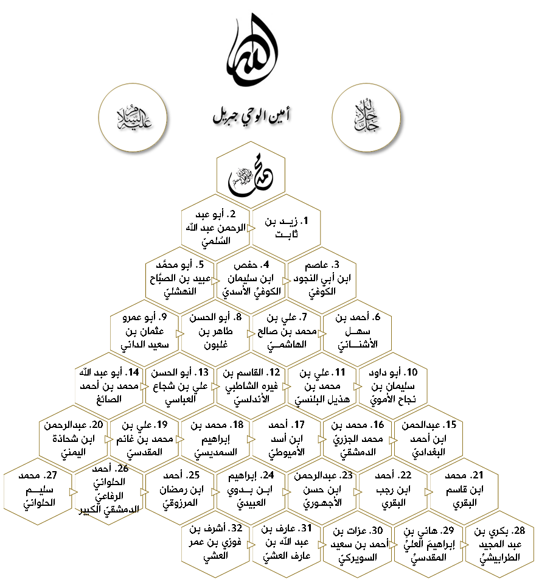

سلسلة السند هي سلسة الرجال الذين نقلوا لنا القرءان العظيم مشافهةً، كلَ واحدٍ منهم قرأ علـى شيخـهِ، وشيخُـهُ علـى شيخِـهِ، وهكـذا إلـى رسول الله صلى الله عليه وسلم عـن أمين الوحـي جبريل عليه السلام، عـن رب العـزة جل جلاله.
هذا مثال لسلسلة سند متصل بالنبي صلى الله عليه وسلم في القرءان الكريم برواية حفص عن عاصم من طريق الشاطبي.

أخـذ الإمام عاصم بن أبي النَّجود، عن أبي عبد الرحمن عبد الله بن حبيب السلميّ الضرير وأبي مريم زِرِّ بن حُبَيْش الأسديّ وأبي عمرو سعد بن إياس الشيباني، وقرأ هؤلاء الثلاثة على عبد الله بن مسعود، وقرأ أبوعبد الرحمن السّلميّ وزِرِّ بن حبيش أيضاً على عثمان بن عفان وعلي بن أبي طالب رضي الله عنهما، وقرأ السلمي أيضاً على أبيّ بن كعب وزيد بن ثابت رضي الله عنهما، وقرأ ابن مسعود وعثمان وعليّ وأبيّ وزيد على رسول الله صلى الله عليه وسلم.
أخـذ الإمام حفص بن سليمان الكوفي الأسدي القراءة عن عاصم بن أبي النَّجود، عن أبي عبد الرحمن عبد الله بن حبيب السلميّ الضرير وأبي مريم زِرِّ بن حُبَيْش الأسديّ وأبي عمرو سعد بن إياس الشيباني، وقرأ هؤلاء الثلاثة على عبد الله بن مسعود، وقرأ أبوعبد الرحمن السّلميّ وزِرِّ بن حبيش أيضاً على عثمان بن عفان وعلي بن أبي طالب رضي الله عنهما، وقرأ السلمي أيضاً على أبيّ بن كعب وزيد بن ثابت رضي الله عنهما، وقرأ ابن مسعود وعثمان وعليّ وأبيّ وزيد على رسول الله صلى الله عليه وسلم.
قال الشاطبي في حرز الأماني ووجه التهاني:
وَبِالْكُوفَـةِ الْغَرَّاءِ مِنْهُـمْ ثَلاَتـَةٌ
أَذَاعُوا فَقَدْ ضَاعَتْ شَذاً وَقَـرَنْفُلاَ
فَأَمَّا أَبُو بَكْرٍ وَعَاصِمٌ اسْمُهُ
فَشُعْبَةُ رَاوِيـهِ المُبَـرِّزُ أَفْضَلاَ
وَذَاكَ ابْنُ عَيَّاشٍ أَبُو بَكْرٍ الرِّضَا
وَحَفْـصٌ وَبِاْلإتْقَانِ كانَ مُفصَّلاَ